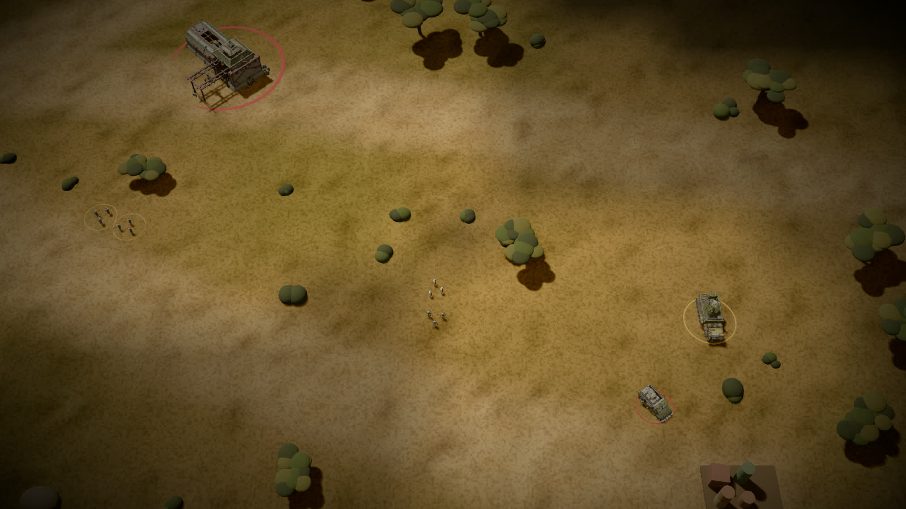
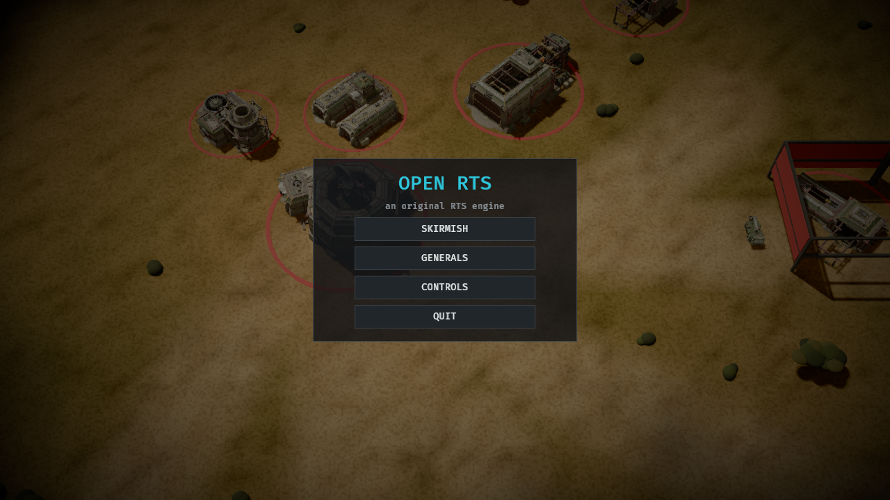
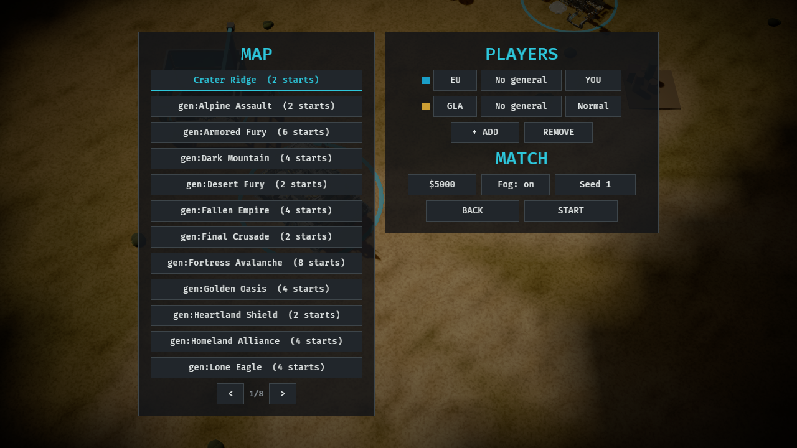
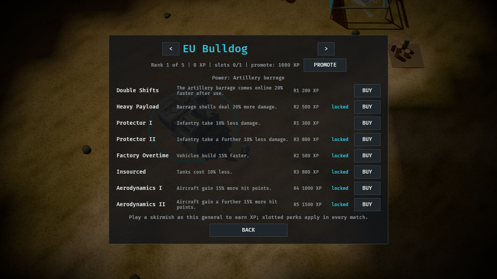
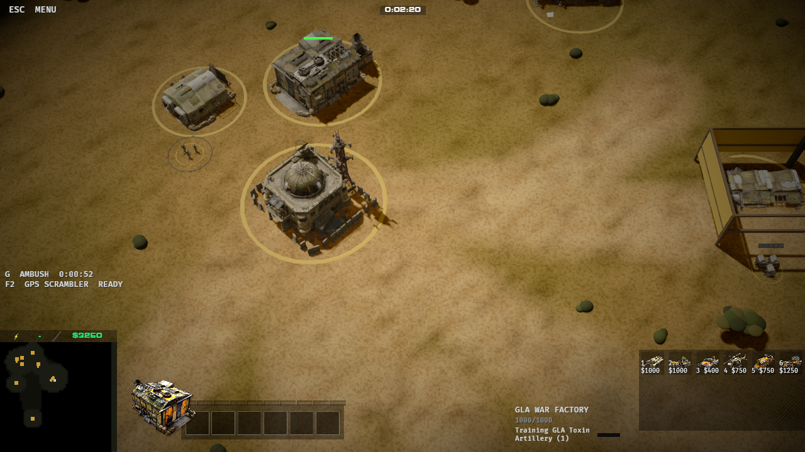
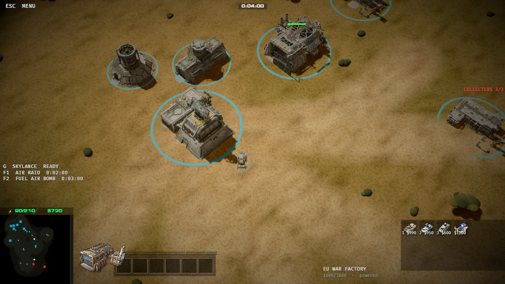
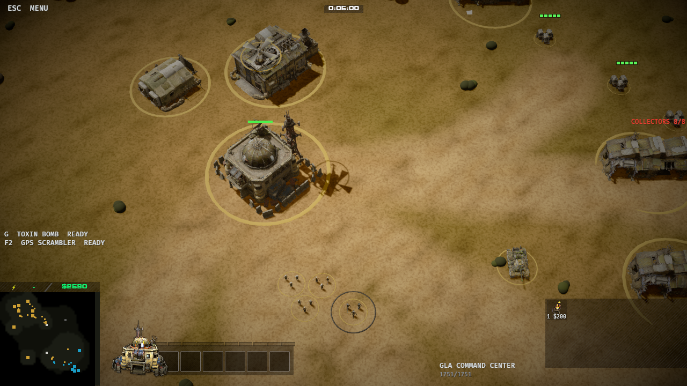
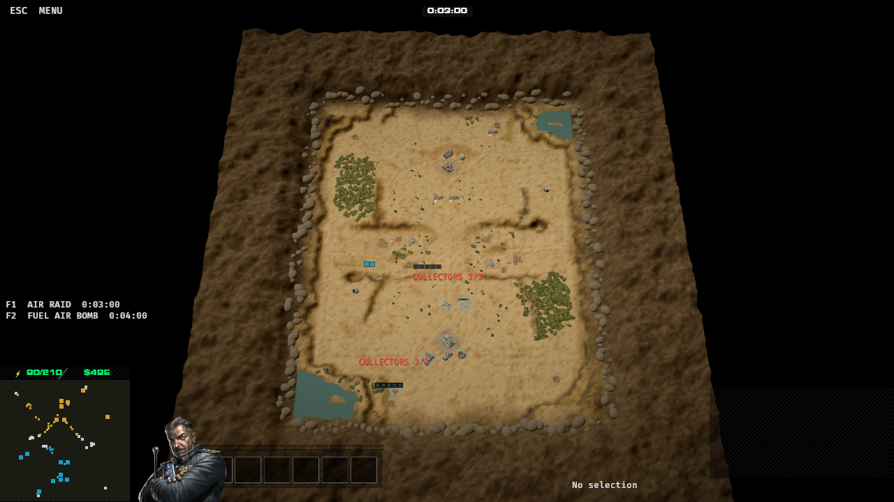
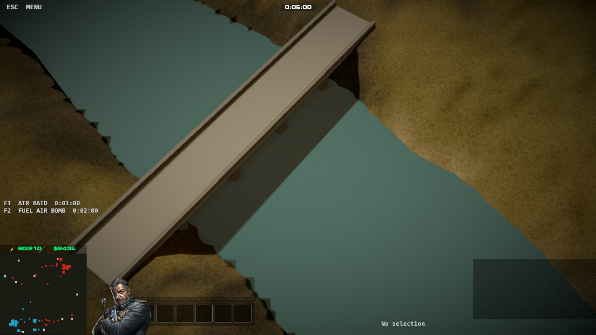

Open RTS — hold the line.
A deterministic real-time strategy engine written in Rust, in the spirit of the cancelled Generals 2. Pick one of fourteen generals, build an economy, field an army, and take on the AI or the Onslaught's waves on the original Generals and Zero Hour maps.
What it is
An original engine — no code from EA's release is ported into it — with its own procedural art, a strict determinism story, and a skirmish mode where the AI sees only what its own units see.
Deterministic to the tick
Integer fixed-point, no floats in state, a per-tick hash. Every match records a replay that re-simulates bit for bit; a golden replay guards the behaviour in CI.
Skirmish, your way
Up to 8 players (human or AI) on 85 original Generals and Zero Hour maps plus a built-in one, bridges included. Pick factions, generals, starting credits, fog and seed in the setup screen.
Two AI levels
Easy sends waves. Normal weighs every fight before it attacks, retreats units that are losing, defends against raiders and expands when its supply runs low. Across all 86 skirmish maps Normal beats Easy 1,253 to 285 (10 of 1,548 matches past 20 minutes).
Three factions
EU, APA and GLA, each with its own economy shape, armour and general, combat units from rifles to artillery and helicopters, a base defence, upgrades and veteran ranks. Infantry garrison buildings; GLA rebels hide in stealth. Numbers come from the 2013 alpha's own data where the archive has it; the rest are labelled placeholders.
Fog of war
Per-player visibility and memory of enemy buildings, in the simulation and in the hash. The AI sees exactly what you see — it scouts instead of cheating.
Sound from scratch
Every sound is synthesized in code: rifle cracks, cannon thumps, artillery, blasts, kills, chimes for your finished units and buildings, panned to where they happen on screen. No sound files. A fight you can't see stays silent, so the fog gives nothing away.
The field remembers
Tracers, shell arcs, blasts and wreckage where things died. All decoration only: the sim never depends on a single pixel of it.
Screens
Rendered by the game itself, with a copy of the 2013 closed alpha imported: the unit and building models, the bottom-bar HUD, portraits and build icons are the alpha's (EA's art), laid out by its own HUD files and fed by this game's simulation. Without the import the game draws its own procedural models and HUD instead.
--frames 900), the camera drifting after the fighting.







Controls
| Select | Left click / drag; Shift adds to the selection |
|---|---|
| Orders | Right click: enemy → attack, supply → gather, foundation → help build, ground → move. Ctrl + right click attack-moves. |
| Build | Constructor selected: 1–9 or a build-grid button picks a building, click places, Esc cancels |
| Produce | Building selected: 1–9 or a build-grid button queues units, Backspace cancels the last |
| Camera | WASD / arrows / screen edge to pan, wheel zooms, Q/E rotates, click the minimap to jump |
| Game | Space pauses, + / − game speed, Esc opens the menu, F10 surrenders, M mutes |
| Extras | G arms your general's power, F1–F3 your faction's support powers (click to aim), T deploys artillery, E empties a garrison, Tab selects the next collector |
Build and run
Rust 1.99+, nothing else. The engine needs no game files.
# run the game (Linux; X11) cargo run -p g2-client --release # play a specific match from the command line cargo run -p g2-client --release -- --faction gla --enemy apa --map "zh:Tournament Desert" # tests: unit, economy, determinism, golden replay cargo test --workspace
Or grab the AppImage from the releases page: one file, includes the original maps.
Status and licensing
Active development. The engine is original work under GPL-3.0. Not affiliated with or endorsed by EA; all trademarks are the property of their owners.
What is in
Skirmish vs AI or another player over the network, an Onslaught mode of scheduled waves, on 86 maps (85 original, one built in), walkable bridges, three factions, fog, stealth, artillery, helicopters, garrisons, upgrades, veterancy, synthesized sound, fourteen generals with their own units, modifiers, an active power that grows with rank and a perk tree you rank up by playing, airstrikes and spy sorties flown by jets that anti-air can shoot down, replays, a deterministic core.
What is not
A network lobby, campaign, units' special abilities, art of its own beyond procedural shapes; the alpha's music and voices only play from an imported copy. The balance is unexamined by design — the numbers are sourced, not tuned.
The 2013 alpha
If you have the closed-alpha client, g2-tools alpha DIR import decodes it into
a cache on your machine; the game then uses its models, sounds, voices, music and HUD.
Neither the alpha nor the cache is in this repository or the AppImage; the screenshots
above show it.
The maps
Original Generals and Zero Hour map data is read at runtime from EA's GPL release (submodule), never copied into this repository or the AppImage beyond the maps themselves.